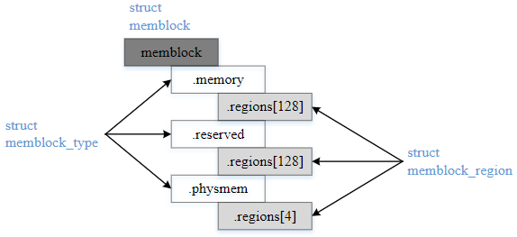
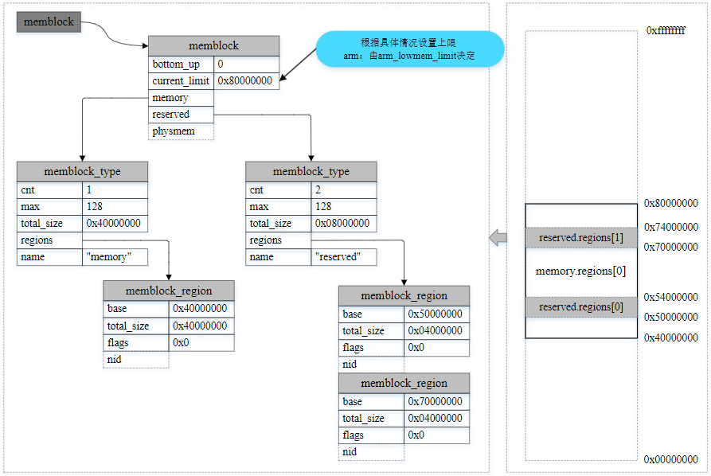
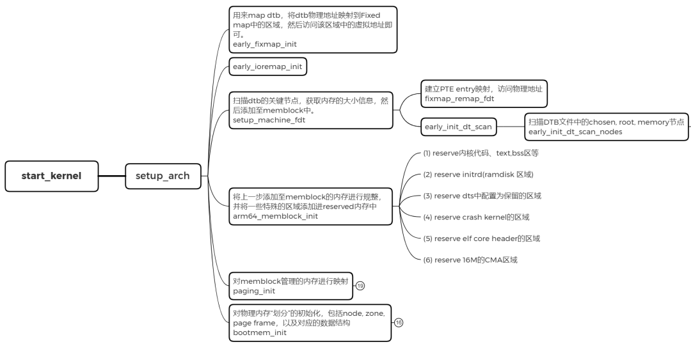
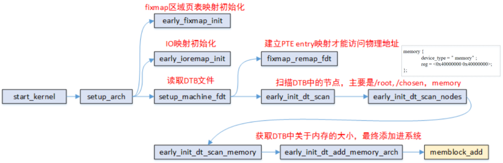
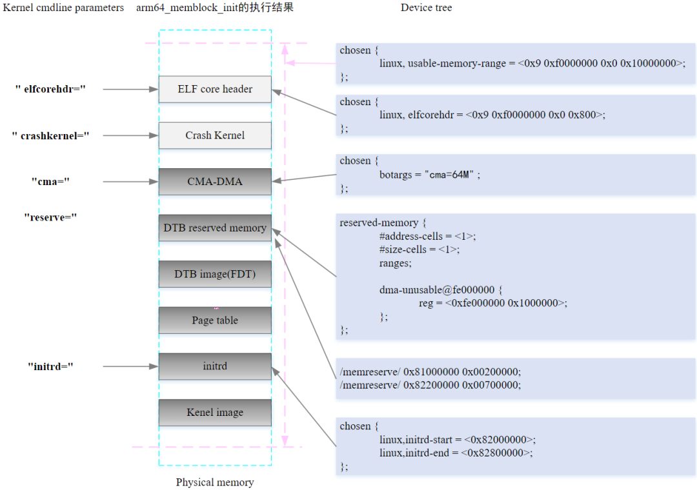
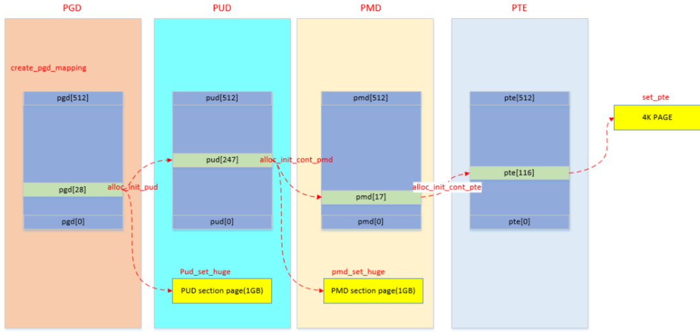
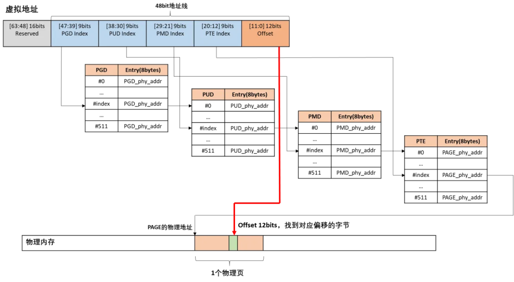
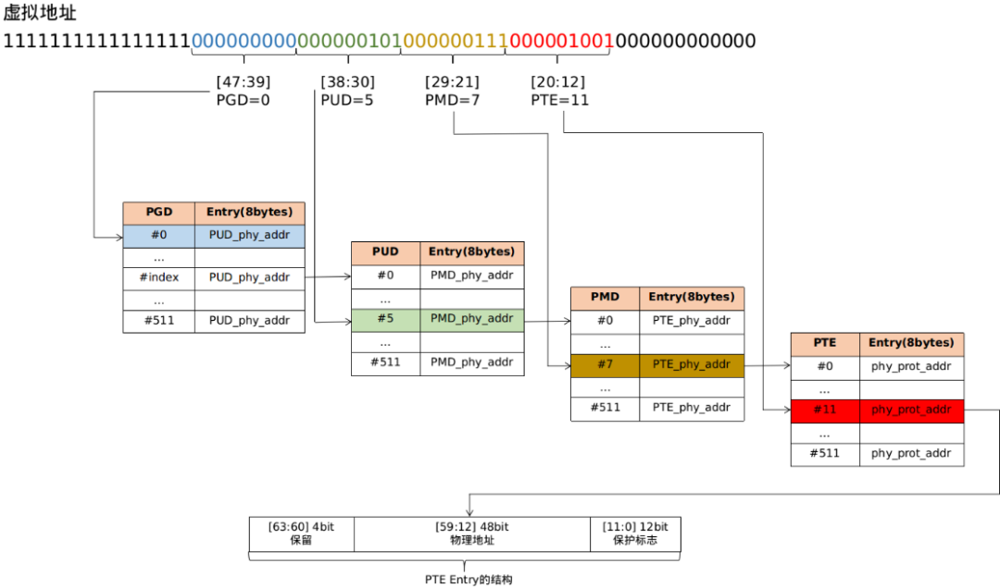

3.2.3.2. linux物理内存初始化(memblock)
内核初始化完成后，系统中的内存的分配和释放时由buddy系统，slab分配器来管理．但在buddy系统，slab分配器可用之前，内存的分配和 释放是由memblock分配器来管理物理内存的使用情况. memblock是唯一能够在早期启动阶段管理内存的内存分配器．
备注
memblock管理的内存为物理地址，非虚拟地址
3.2.3.2.1. early boot memory
early boot memory即系统上电到内核内存管理模型创建之前这段时间的内存管理，严格来说他是系统启动过程中的一个中间阶段的内存管理，当 sparse内存模型数据初始化完成之前后，将会从early boot memory中接管内存管理权限．
sparse内存模型本身的内存管理数据也是需要复杂的初始化过程，而这个初始化过程也需要申请内存，比如mem_map. 因此需要在sparse模型之前需要一个内存管理 子系统为其分配内存，尤其针对NUMA系统，需要指明各个node上申请到的相应内存
include/linux/memblock.h
struct memblock {
bool bottom_up;
phys_addr_t current_limit;
struct memblock_type memory;
struct memblock_type reserved;
#ifdef CONFIG_HAVE_MEMBLOCK_PHYS_MAP
struct memblock_type physmem;
#endif
};
bottom_up: 申请内存时分配器分配方式，true表示从低地址到高地址分配，false表示从高地址到低地址分配
current_limit: 内存块大小限制，一般可在memblock_alloc申请内存时进行检查限制
memory: 可以被memblock管理分配的内存(系统启动时，会因为内核镜像加载等原因，需要提前预留内存，这些都不在memory之中)
reserved: 预留已经分配的空间，主要包括memblock之前占用的内存以及通过memblock_alloc从memory中申请的内存空间
physmem: 所有物理内存的集合
include/linux/memblock.h
struct memblock_type {
unsigned long cnt;
unsigned long max;
phys_addr_t total_size;
struct memblock_region *regions;
char *name;
};
cnt: 该memblock_type内包含多少个regions
max: memblock_type内包含regions的最大个数，默认为128
total_size: 该memblock_type内所有regions加起来的size大小
regions: regions数组，指向的是数组的首地址
name: memblock_type的名称
include/linux/memblock.h
struct memblock_region {
phys_addr_t base;
phys_addr_t size;
enum memblock_flags flags;
#ifdef CONFIG_HAVE_MEMBLOCK_NODE_MAP
int nid;
#endif
};
memblock_regions代表了一块物理内存区域
base: 该region的物理地址
size: 该region区域的大小
flags: region区域的flags
nid: nid
include/linux/memblock.h
enum memblock_flags {
MEMBLOCK_NONE = 0x0,
MEMBLOCK_HOTPLUG = 0x1,
MEMBLOCK_MIRROR = 0x2,
MEMBLOCK_NOMAP = 0x4,
};
MEMBLOCK_NONE: 表示没有特殊需求，正常使用
MEMBLOCK_HTPLUG: 该块内存支持热插拔，用于后续创建zone时，归ZONE_MOVABLE管理
MEMBLOCK_MIRROR: 用于mirror功能，内存镜像是内存冗余技术的一种，工作原理与硬盘的热备份类似，将内存数据做两个复制，分别存放在主内存和镜像内存中
MEMBLOCK_NOMAP: 不能被kernel用于直接映射(即线性映射区域)
各数据结构之间的关系

下面通过一个例子来更好的理解，用一个memblock_region实例来描述memory类型的1GB可用物理内存区间，并用两个memblock_region实例描述reserved类型的两个 子区间，指示两个子内存区间正在被使用而保留

3.2.3.2.2. memblock初始化
在bootloader做好初始化工作后，将kernel image加载到内存后，就会跳到kernel部分继续执行，跑的先是汇编部分的代码，进行各种设置和环境初始化后，就会跳到
kernel的第一个函数 start_kernel
init/main.c
asmlinkage __visible void __init start_kernel(void)
{
...
cgroup_init_early();
...
boot_cpu_init();
page_address_init();
early_security_init();
setup_arch(&command_line);
...
mm_init();
...
sched_init();
...
console_init();
...
setup_per_cpu_pageset();
...
fork_init();
...
}
这里内容较多，我们重点关注 setup_arch 函数
arch/arm64/kernel/setup.c
void __init setup_arch(char **cmdline_p)
{
init_mm.start_code = (unsigned long)_text;
init_mm.end_code = (unsigned long)_etext;
init_mm.end_data = (unsigned long)_edata;
init_mm.brk = (unsigned long)_end;
*cmdline_p = boot_command_line;
early_fixmap_init();
early_ioremap_init();
setup_machine_fdt(__fdt_pointer);
...
arm64_memblock_init();
paging_init();
...
bootmem_init();
...
}

setup_arch 中完成memblock的初始化，物理内存映射，sparse初始化等工作
arch/arm64/kernel/setup.c
static void __init setup_machine_fdt(phys_addr_t dt_phys)
{
int size;
void *dt_virt = fixmap_remap_fdt(dt_phys, &size, PAGE_KERNEL);
const char *name;
if(dt_virt)
memblock_reserve(dt_phys, size);
if(!dt_virt || !early_init_dt_scan(dt_virt)) {
pr_erit("\n"
"Error: invalid device tree blob at physsical address %pa (virtual address 0x%p)\n",
&dt_phys, dt_virt);
while(true)
cpu_relax();
}
fixmap_remap_fdt(dt_phys, &size, PAGE_KERNEL_RO);
name = of_flat_dt_get_machine_name();
if(!name)
return;
dump_stack_set_arch_desc("%s (DT)", name);
}
拿到dtb的物理地址后，会通过fixmap_remap_fdt进行mapping,其中包括pgd, pud, pte等mapping,当mapping成功后会返回dt_virt，并通过memblock_reserve添加到 memblock.reserved中
接着是early_init_dt_scan，通过解析dtb文件的memory节点获得可用物理内存的起始地址和大小，并通过类memblock_add的api往memory.regions数组添加一个memblock_region 实例，用于管理这个物理内存区域

当物理内存都添加进系统之后，arm64_memblock_init会对整个物理内存进行整理，主要的工作就是将一些特殊的区域添加进reserved内容中．函数执行完后，如下图所示

3.2.3.2.3. memblock物理内存映射
物理内存在通过memblock_add添加进系统之后，这部分的物理内存到虚拟内存的映射还没有建立．即使可以通过memblock_alloc分配一段物理内存，但是还不能访问， 需要在paging_init执行之后
void __init paging_init(void)
{
pgd_t *pgdp = pgd_set_fixmap(__pa_symbol(swapper_pg_dir));
map_kernel(pgdp);
map_mem(pgdp);
pgd_clear_fixmap();
cpu_replace_ttbrl(lm_alias(swapper_pg_dir));
init_mm.pgd = swapper_pg_dir;
mmeblock_free(__pa_symbol(init_pg_dir),
__pa_symbol(init_pg_end) - __pa_symbol(init_pg_dir));
memblock_allow_resize();
}
pgd_set_fixmap: swapper_pg_dir页表的物理地址映射到fixmap的FIX_PGD区域，然后使用swapper_pg_dir页表作为内核的pgd页表．因为页表都是处于虚拟地址空间 构建的，所以这里需要转成虚拟地址pgdp．而此时伙伴系统也没有ready，只能通过fixmap预先设定用于映射PGD的页表，现在pgdp是分配FIX_PGD的物理内存空间对应的虚拟地址
map_kernel: 将内核的各个段(.text .init .data .bss)映射到虚拟内存空间，这样内核就可以正常运行了
map_mem: 将memblock子系统添加的物理内存进行映射，主要是把通过memblock_add添加到系统中的物理内存进行映射，主要如果memblock设置了MEMBLOCK_NOMAP标志的话则就不对其地址进行映射
cpu_replace_ttbr1: 将TTBR1寄存器指向新准备的swapper_pg_dir页表，TTBR1寄存器是虚拟内存管理的重要组成部分，用于存储当前使用的页表的首地址
将init_pg_dir指向的区域释放
__create_pgd_mapping
map_kernel是映射内核启动时需要的各个段，map_mem是映射memblock添加的物理内存．但是页表映射都会调用到 __create_pgd_mapping 函数
static void __create_pgd_mapping(pgd_t *pgdir, phys_addr_t phys, unsigned long virt,
phys_addr_t size, pgprot_t prot, phys_addr_t (*pgtable_alloc)(int), int flags)
{
unsigned long addr, end, next;
pgd_t *pgdp = pgd_offset_pgd(pgdir, virt);
if(WARN_ON((phys ^ virt) & ~PAGE_MASK))
return;
phys &= PAGE_MASK;
addr = virt & PAGE_MASK;
end = PAGE_ALIGN(virt + size);
do {
next = pgd_addr_end(addr, end);
alloc_init_pud(pgdp, addr, next, phys, prot, pgtable_alloc, flags);
phys += next - addr;
} while(pgdp++, addr = next, addr != end);
}

总体来说，就是逐级页表建立映射关系，同时中间会进行权限的控制
从上面的代码流程分析，可以看出pgd/pud/pmd/pte的页表项虽然保存的都是物理地址，但是上面pgd/pud/pmd/pte的计算分析都是基于虚拟地址
假设内核需要访问虚拟地址virt_addr对应的物理地址为phys的内容
通过存放内核页表的寄存器TTBR1得到swapper_pg_dir页表的物理地址，然后转换成pgd页表的虚拟地址
根据virt_addr计算对应的pgd entry(pgd页表的地址+vrt_addr计算出的offset)，PGD entry存放的是PUD页表的物理地址，然后转换成PUD页表基地址的虚拟地址
PUD和PMD的处理过程类似
最后从PMD entry中找到PTE页表的虚拟地址，根据vir_addr计算得到对应的pte entry,从pte entry中得到phys所在的物理页帧地址
加上根据virt_addr计算得到的偏移后得到virt对应的物理地址

以虚拟地址0xffff000140e09000为例
